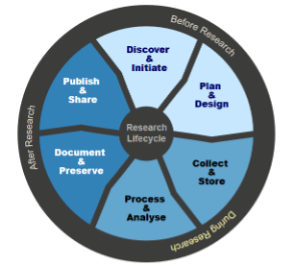

Learning goal: Recognise the stages of the research lifecycle and the processes involved at each step
How we manage data has an impact on the overall quality and integrity of our research. Many processes occur throughout the research lifecycle which are directly impacted by how we manage our data.
Understanding when certain processes occur in the lifecycle can make it easier to prepare and plan. Some key aspects of RDM concern the organization, documentation, storage, archiving and sharing of research data.
Below is a diagram which visualizes this lifecycle. Can you determine what happens at each stage? Use the drop-down menu to select the appropriate answer.
On paper: Think of your own research, can you image what tasks you will take on? Write these down and link them to the appropriate steps of the lifecycle. Data management plans often reflect this lifecycle, understanding the processes which occur at each stage helps with planning
Good data management: